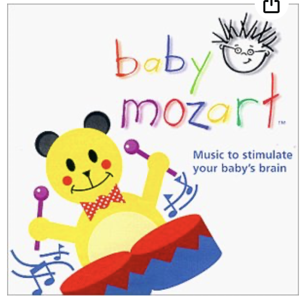
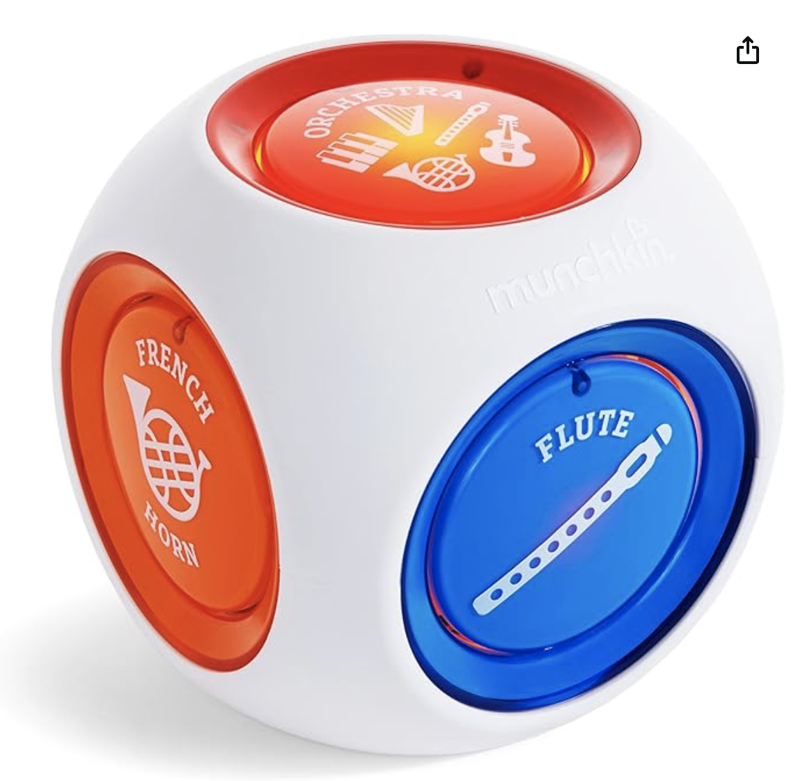
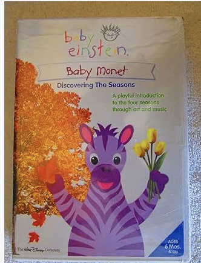

The Truth About Baby Mozart
Rauscher's research found that college students who listened to Mozart’s Sonata for Two Pianos in D Major (K.448), experienced a temporary boost in spatial reasoning. However, the study’s findings were misrepresented by the media, and companies quickly capitalized on the idea that classical music could enhance cognitive development in babies. This misunderstanding led to the rise of products like Baby Mozart, which promise benefits that the original research never supported.
Baby Mozart - Music to Stimulate Your Baby's Brain (CD): This CD includes 15 selections of Mozart’s music, with the claim that it helps stimulate brain development in infants. However, listening alone does not improve intelligence, and this product misleads parents into thinking that passive exposure to classical music will have long-term effects.


The Munchkin Mozart Magic Cube is a toy designed to introduce infants and toddlers to musical elements by allowing them to combine different instrument sounds. The toy is marketed as a brain-boosting, cognitive-enhancing experience that helps children develop a sense of rhythm, coordination, and an early appreciation for music. While interactive and engaging, toys like the Mozart Magic Cube are often linked to the misconception that classical music alone is uniquely beneficial for cognitive development. While this toy does encourage interaction, true cognitive benefits are more likely to come from hands-on music-making experiences like playing an instrument rather than simply pressing buttons to layer pre-recorded sounds.
This DVD pairs Mozart’s music with moving visuals, claiming to engage infants and stimulate their brains. However, scientists caution that passive screen time for babies does not provide meaningful cognitive benefits, and this product overstates its impact.

Baby Mozart products are built on the false assumption that simply exposing infants to classical music will enhance their intelligence. However, scientific research shows that passive listening is not enough—cognitive benefits come from active engagement with music, such as learning to play an instrument or interacting with rhythmic patterns. Rauscher & Hinton (2011) emphasized that structured musical engagement—not just background exposure—leads to measurable improvements in cognitive function.